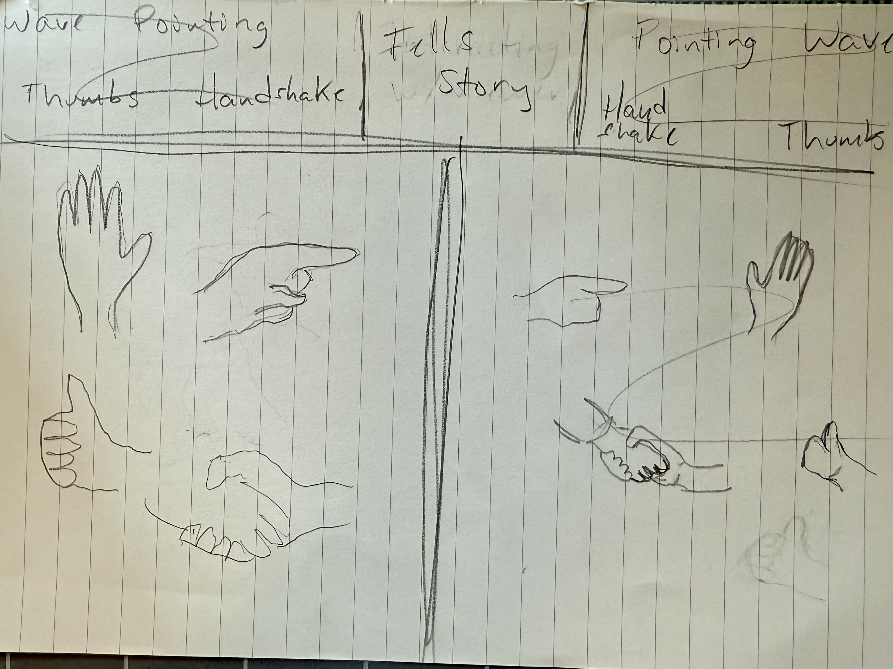
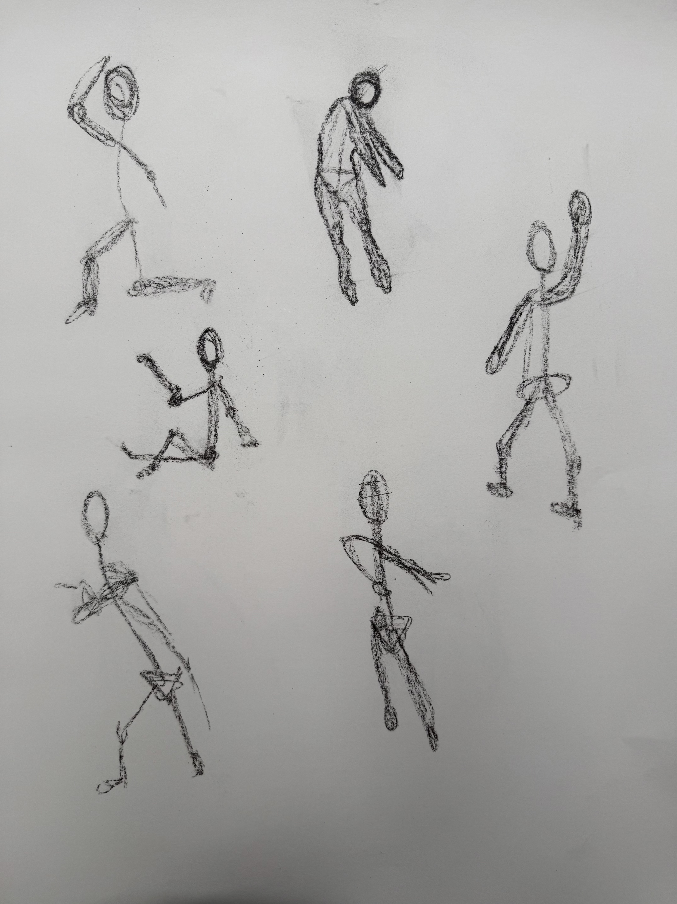
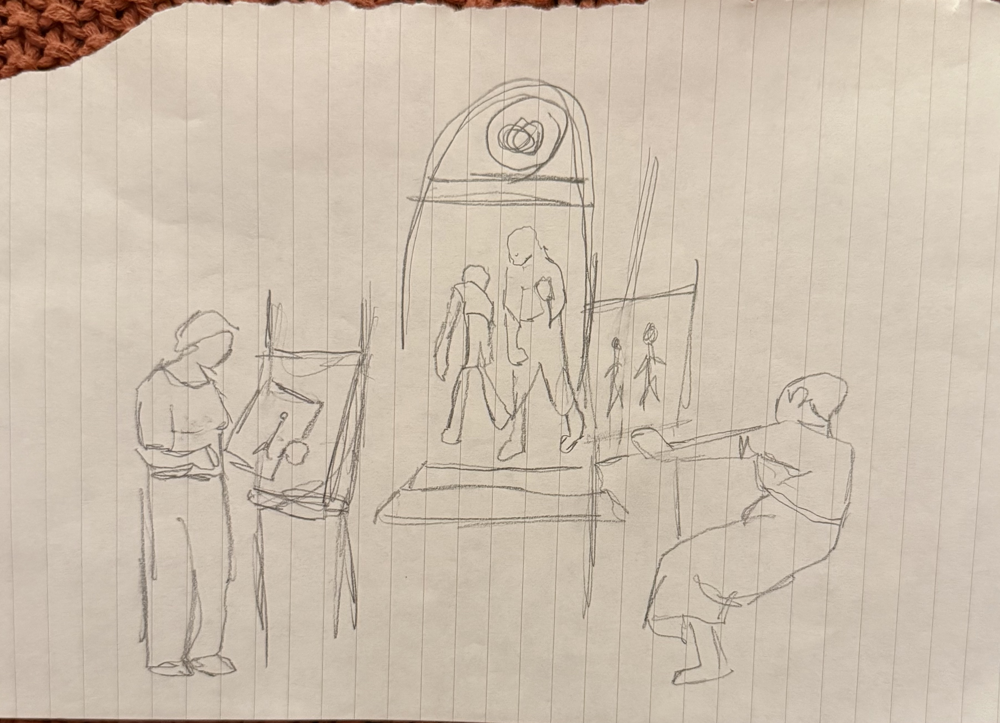

Designs
Process fragment
Compositional patterns and design explorations. The arrangement of elements within the picture plane.
Study Collection

Designs Study 01: Thumbnail Compositions

Designs Study 02: Figure Arrangement

Designs Study 03: Scene Composition

Designs Study 04: Proportional Framework